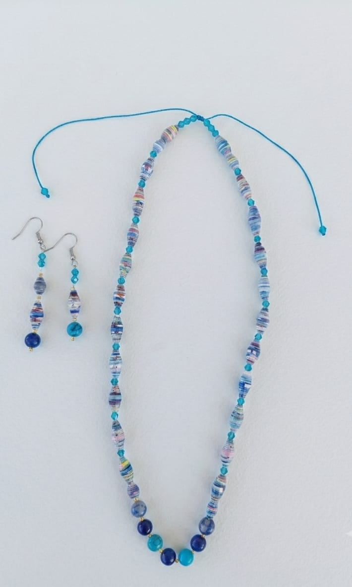
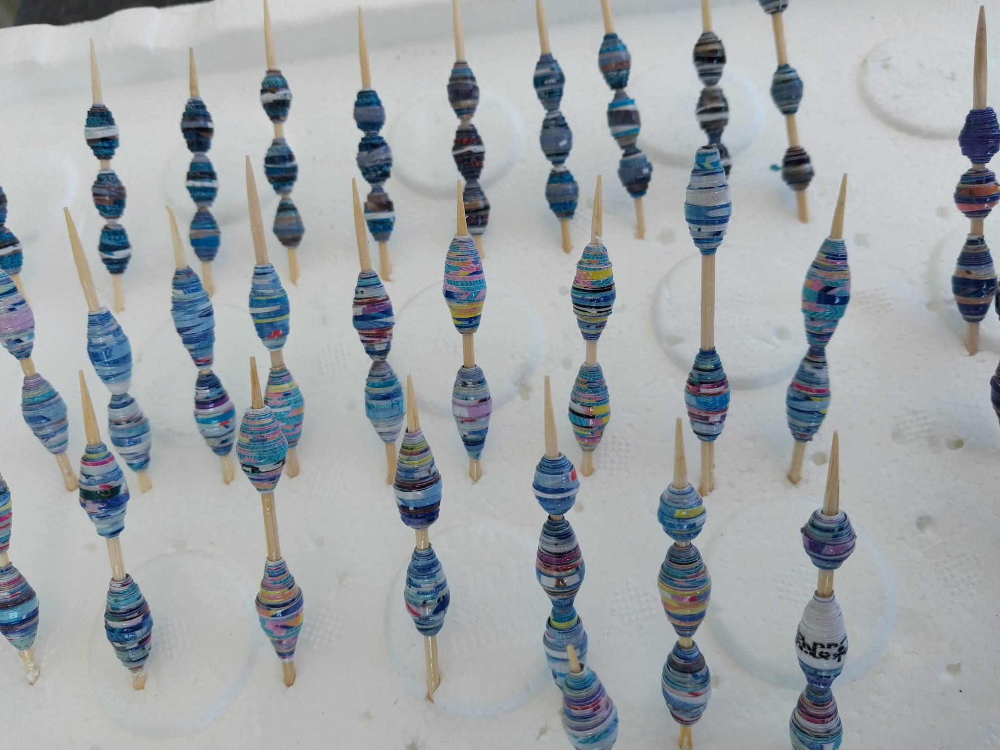
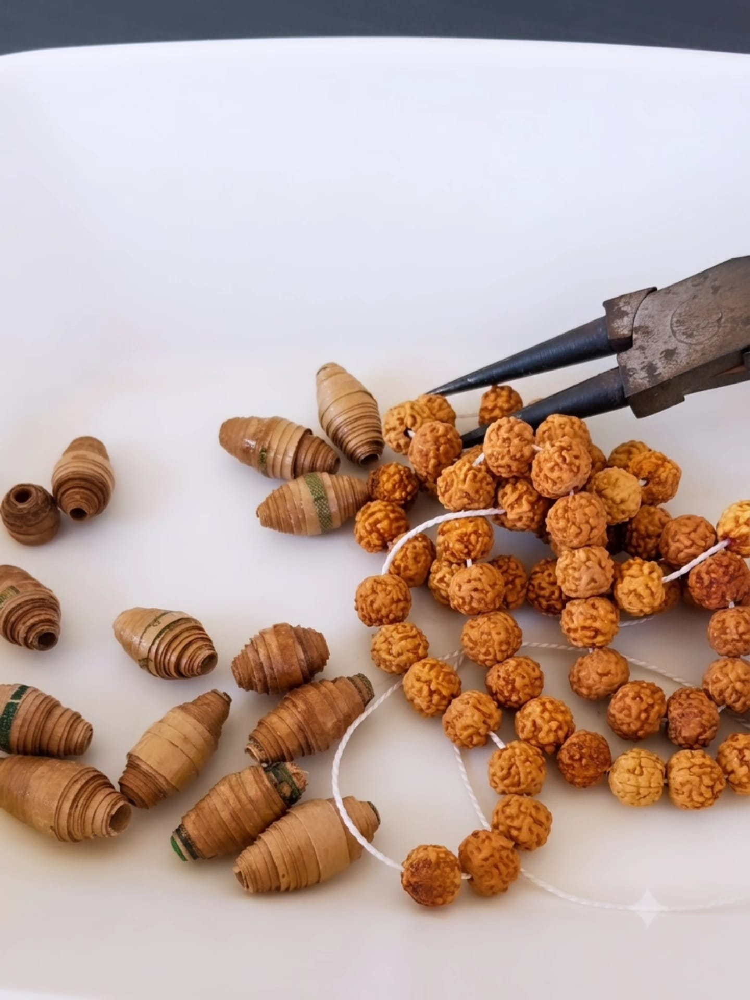
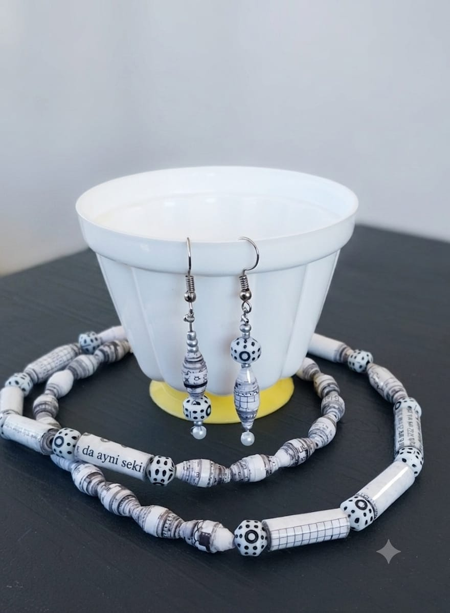
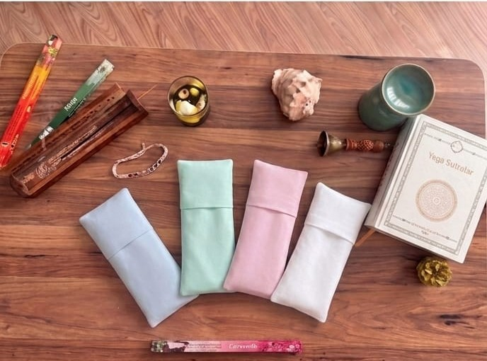
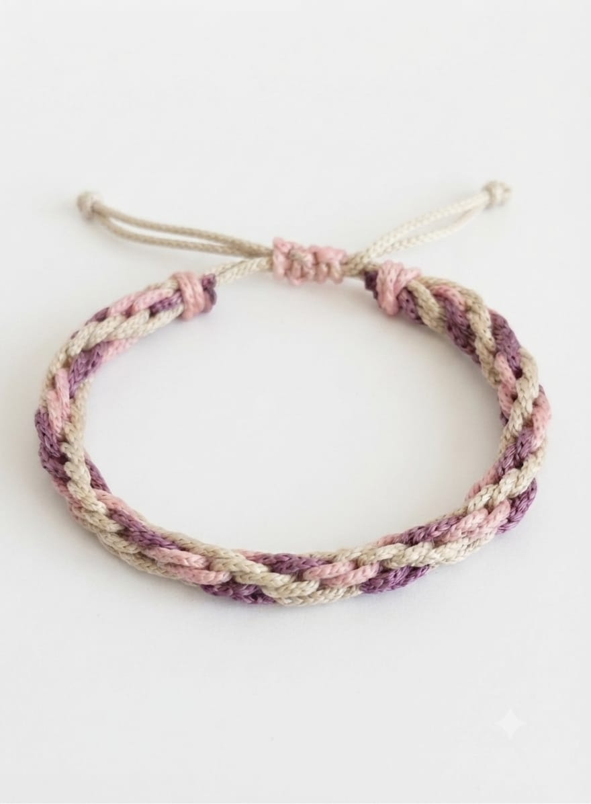
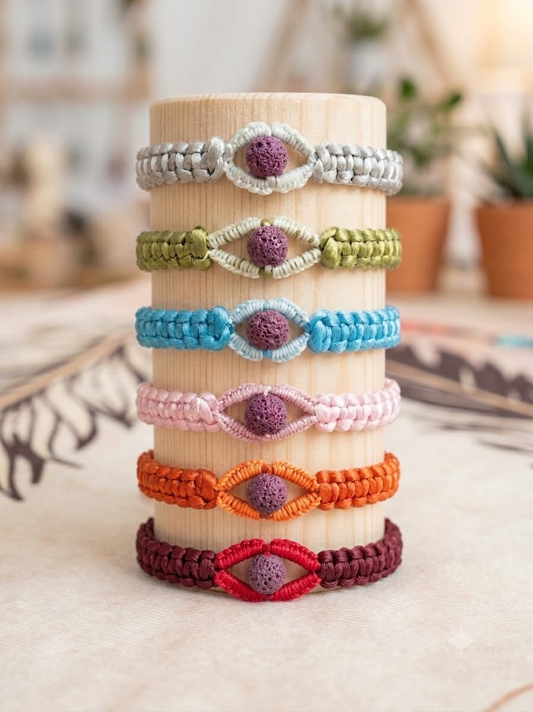
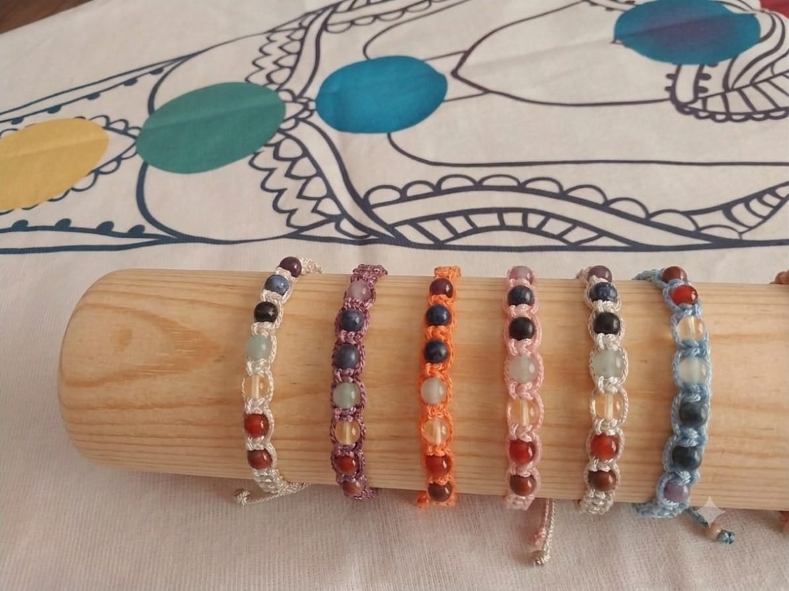
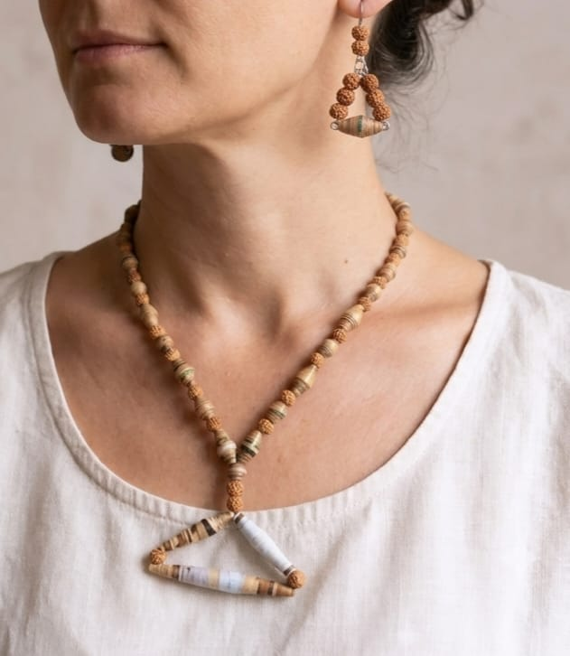

ZİHİN, BEDEN VE ZANAATIN DENGESİ
El Emeği Ritüeller, Zamansız Tasarımlar
Doğal malzemeler, kağıt boncuklar ve meditasyonun dingin enerjisiyle şekillenen özel el yapımı aksesuarlar.
Shopier Mağazamızı Ziyaret Et


ZİHİN, BEDEN VE ZANAATIN DENGESİ
Doğal malzemeler, kağıt boncuklar ve meditasyonun dingin enerjisiyle şekillenen özel el yapımı aksesuarlar.
Shopier Mağazamızı Ziyaret Et


EL YAPIMI TASARIMLAR

Geri dönüştürülmüş kağıtlardan elde yapılan, benzersiz ve doğa dostu tasarım.

Derin gevşeme ve meditasyon için lavanta ve doğal tohum dolgulu göz yastığı.

Geleneksel Japon örgü sanatı ile hazırlanmış zamansız el emeği bileklik.

Uçucu yağlar damlatılabilen, topraklayıcı lav taşı ve doğal mineral bilekliği.

7 çakra rengini temsil eden el örgüsü, dengeleyici enerji bilekliği.

Geleneksel Rudraksha tohumları ve doğal taşlarla hazırlanan el yapımı kolye ve küpe seti.
KİŞİYE ÖZEL FREKANS TASARIMI
Adınızdaki harf frekansları, doğum tarihiniz ve kişisel niyetiniz ruhsal haritanızı oluşturur. Özel geliştirdiğimiz numeroloji analizi ile size özel dengeleyici doğal taşları keşfedin ve kişisel enerjinizle uyumlanan tasarımlara ulaşın.
Numeroloji Analizine Başla →